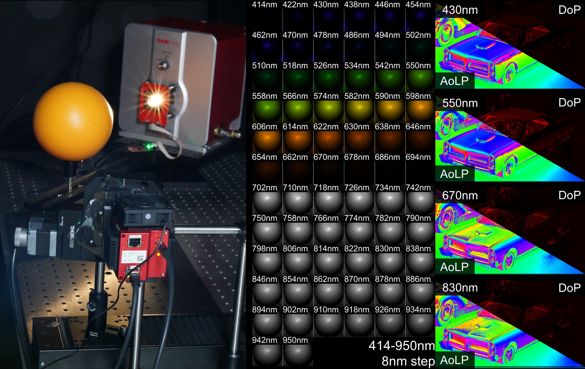
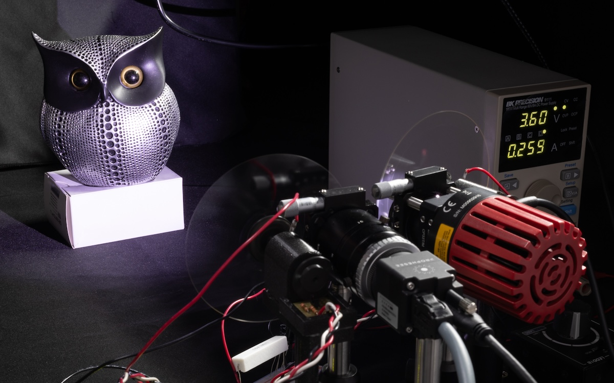
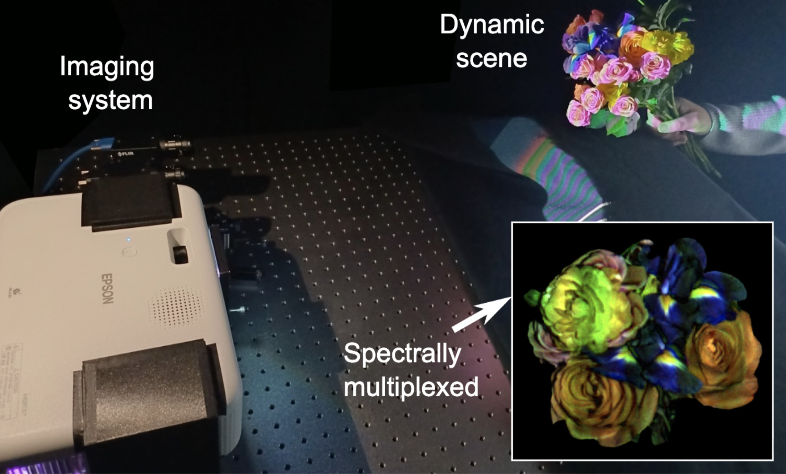
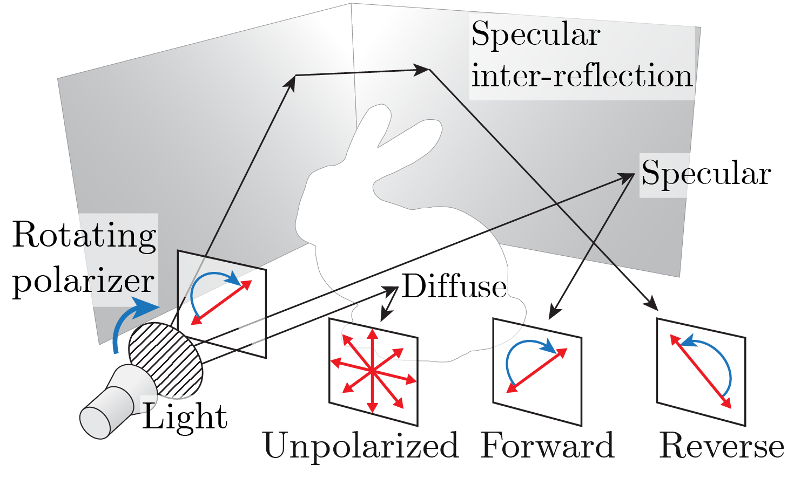
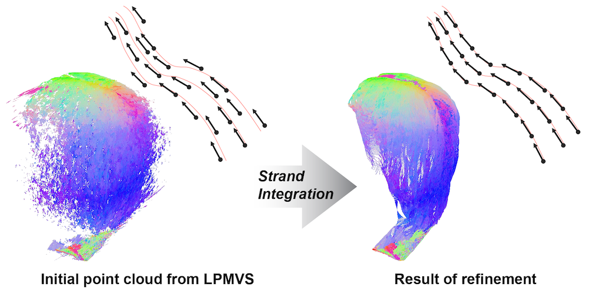
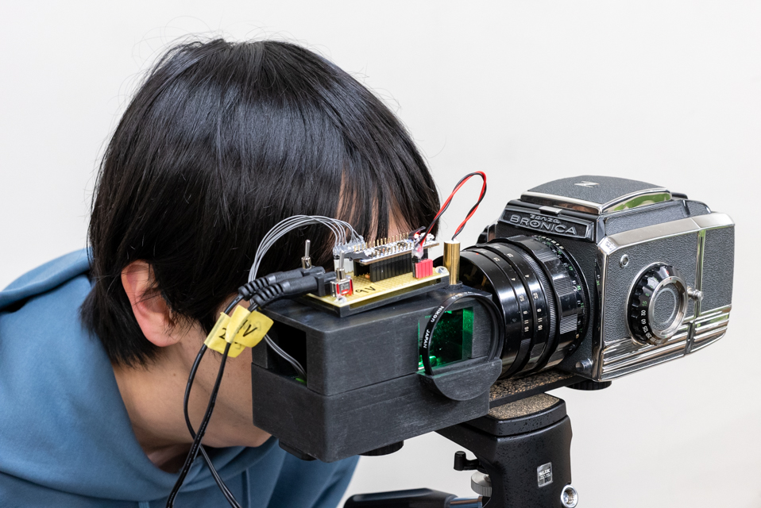

Ryota Maeda / 前田 涼汰
Postdoctoral Researcher
Computational Imaging Group
(PI: Prof. Seung-Hwan Baek)
POSTECH
My research interests include computer vision, computer graphics, and computational imaging. I explore next-generation imaging systems by co-designing optical hardware and computational algorithms to capture and analyze rich visual information.
I received my Ph.D. in Engineering from University of Hyogo in 2026 under the supervision of Prof. Shinsaku Hiura.
Research

Hyperspectral Polarimetric BRDFs of Real-world Materials
Yunseong Moon, Ryota Maeda, Suhyun Shin, Inseung Hwang, Youngchan Kim, Min H. Kim, Seung-Hwan Baek,
SIGGRAPH Asia 2025
[Project page]

Event Ellipsometer: Event-based Mueller-Matrix Video Imaging
Ryota Maeda, Yunseong Moon, Seung-Hwan Baek,
CVPR 2025 highlight
[Project page]

Dense Dispersed Structured Light for Hyperspectral 3D Imaging of Dynamic Scenes
Suhyun Shin, Seungwoo Yoon, Ryota Maeda, Seung-Hwan Baek,
CVPR 2025
[Project page]

Polarimetric Light Transport Analysis for Specular Inter-reflection
Ryota Maeda, Shinsaku Hiura,
IEEE Transactions on Computational Imaging, 2024
[Project page]

Refinement of Hair Geometry by Strand Integration
Ryota Maeda, Kenshi Takayama, Takafumi Taketomi,
Computer Graphics Forum (PG2023), 2023.
[Project page]

EpiScope: Optical Separation of Reflected Components by Rotation of Polygonal Mirror
Ryota Maeda, Shinsaku Hiura,
SIGGRAPH Asia 2021 Technical Communications, 2021.
[Project page]
Article
韓国・POSTECHでの研究留学記を書きました。POSTECH에서의 연구 유학에 대해 썼습니다. 번역기를 사용해서 읽어주세요.
I wrote about my experience studying abroad at POSTECH in South Korea. Please use a translation tool to read it.
External Links
GitHub LinkedIn Flickr Google Scholar ORCID CVBackground
| 2016/4~2020/3 | School of Engineering, University of Hyogo |
| 2018/8~2018/9 | Internship at Optical Media Interface Lab (Mukaigawa Lab) at NAIST |
| 2019/4~2026/3 | Visual Media Engineering Lab (Hiura Lab) at University of Hyogo |
| 2020/4~2026/3 | Graduate School of Engineering, University of Hyogo |
| 2022/8~2022/9 | Internship at CyberAgent AI Lab (and continued as a part-time work until 2023/10) |
| 2024/3~2025/2 | Visiting student at POSTECH Computational Imaging Group |
| 2026/4~present | Postdoctoral Researcher at POSTECH Computational Imaging Group |